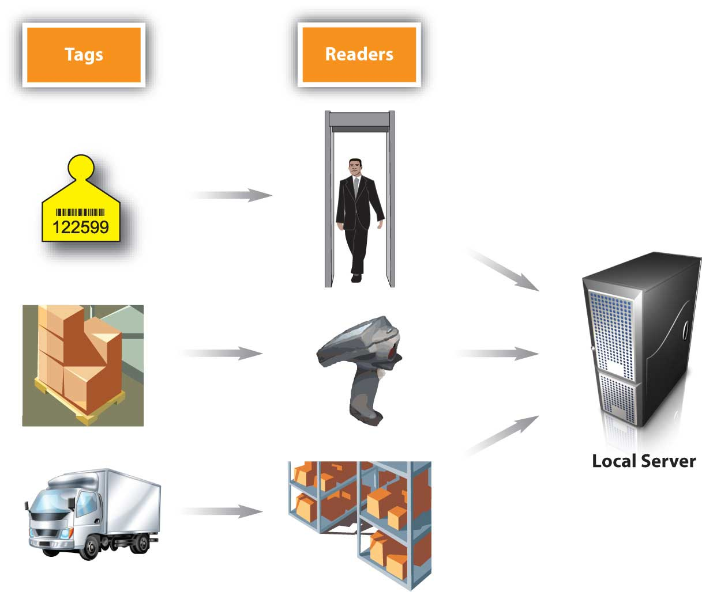

Imagine you are a marketing manager who has done everything in your power to help develop and promote a product—and it’s selling well. But now your company is running short of the product because the demand forecasts for it were too low. Recall that this is the scenario Nintendo faced when the Wii first came out. The same thing happened to IBM when it launched the popular ThinkPad laptop in 1992.
Not only is the product shortage going to adversely affect the profitably of your company, but it’s going to adversely affect you, too. Why? Because you, as a marketing manager, probably earn either a bonus or commission from the products you work to promote, depending on how well they sell. And, of course, you can’t sell what you don’t have.
As you can probably tell, the best marketing decisions and supplier selections aren’t enough if your company’s demand forecasts are wrong. Demand planningThe process of estimating how much of a good or service customers will buy from you. is the process of estimating how much of a good or service customers will buy from you. If you’re a producer of a product, this will affect not only the amount of goods and services you have to produce but also the materials you must purchase to make them. It will also affect your production schedulingThe management of the resources, events, and processes need to create an offering., or the management of the resources, events, and processes need to create an offering. For example, if demand is heavy, you might need your staff members to work overtime. Closely related to demand forecasting are lead times. A product’s lead timeThe amount of time it takes for a customer to receive a good or service once it’s been ordered. is the amount of time it takes for a customer to receive a good or service once it’s been ordered. Lead times also have to be taken into account when a company is forecasting demand.
Sourcing decisions—deciding which suppliers to use—are generally made periodically. Forecasting decisions must be made more frequently—sometimes daily. One way for you to predict the demand for your product is to look at your company’s past sales. This is what most companies do. But they don’t stop there. Why? Because changes in many factors—the availability of materials to produce a product and their prices, global competition, oil prices (which affect shipping costs), the economy, and even the weather—can change the picture.
For example, when the economy hit the skids in 2008, the demand for many products fell. So if you had based your production, sales, and marketing forecasts on 2007 data alone, chances are your forecasts would have been wildly wrong. Do you remember when peanut butter was recalled in 2009 because of contamination? If your firm were part of the supply chain for peanut butter products, you would have needed to quickly change your forecasts.
The promotions you run will also affect demand for your products. Consider what happened to KFC when it first came out with its new grilled chicken product. As part of the promotion, KFC gave away coupons for free grilled chicken via Oprah.com. Just twenty-four hours after the coupons were uploaded to the Web site, KFC risked running out of chicken. Many customers were turned away. Others were given “rain checks” (certificates) they could use to get free grilled chicken later.Joe Weisenthal, “Slammed KFC ‘Scrambling to Source More Chicken,’” The Business Insider, May 6, 2009, http://www.businessinsider.com/kfc-2009-5 (accessed December 2, 2009).
In addition to looking at the sales histories of their firms, supply chain managers also consult with marketing managers and sales executives when they are generating demand forecasts. Sales and marketing personnel know what promotions are being planned because they work more closely with customers and know what customers’ needs are and if those needs are changing.
Firms also look to their supply chain partners to help with their demand planning. Collaborative planning, forecasting, and replenishment (CPFR)A practice whereby supply chain partners share information and coordinate their operations. is a practice whereby supply chain partners share information and coordinate their operations. Walmart has developed a Web-based CPFR system called Retail Link. Retailers can log into Retail Link to see how well their products are selling at various Walmart stores, how soon more products need to be shipped to the company and where, how any promotions being run are affecting the profitability of their products, and so forth. Because different companies often use different information technology systems and software, Web-based tools like Retail Link are becoming a popular way for supply chain partners to interface with one another.
Not all firms are wild about sharing every piece of information they can with their supply chains partners. Some retailers view their sales information as an asset—something they can sell to information companies like Information Resources, Inc., which provides competitive data to firms that willing to pay for it.Donald J. Bowersox and David J. Closs, “Ten Mega-Trends That Will Revolutionize Supply Chain Logistics,” Journal of Business Logistics 21, no. 2 (2000): 11. By contrast, other firms go so far as to involve their suppliers before even producing a product so they can suggest design changes, material choices, and production recommendations.
Take a Test Drive of the Tata Nano
http://www.youtube.com/v/3sZitve3SUwPriced at about $2,500 the Tata Nano is the least expensive car ever produced in the world. To make a safe, reliable car at such a low cost, Tata Motors, an Indian company, sought new, innovative design approaches from its suppliers. The elimination of one of the car’s two windshield wipers was one result of the collaboration that occurred between Tata and its supply chain partners.Steven Wingett, “Capro, Saint-Gobain, Denso Win Big with Tata Nano,” Automotive News Europe, March 3, 2008, 16.
The trend is clearly toward more shared information, or what businesspeople refer to as supply chain visibilityA situation in which supply chain partners share information with one another so they can see how well the chain is working.. After all, it makes sense that a supplier will be not only more reliable but also in a better position to add value to your products if it knows what your sales, operations, and marketing plans are—and what your customers want. By sharing more than just basic transaction information, companies can see how well operations are proceeding, how products are flowing through the chain, how well the partners are performing and cooperating with one another, and the extent to which value is being built in to the product.
Demand-planning software can also be used to create more accurate demand forecasts. Demand-planning softwareSoftware that can synthesize a variety of factors to better predict a firm’s demand. can synthesize a variety of factors to better predict a firm’s demand—for example, the firm’s sales history, point-of-sale data, warehouse, suppliers, and promotion information, and economic and competitive trends. So a company’s demand forecasts are as up-to-date as possible, some of the systems allow sales and marketing personnel to input purchasing information into their mobile devices after consulting with customers.
Litehouse Foods, a salad dressing manufacturer, was able to improve its forecasts dramatically by using demand-planning software. Originally the company was using a traditional sales database and spreadsheets to do the work. “It was all pretty much manual calculations. We had no engine to do the heavy lifting for us,” says John Shaw, the company’s Information Technology director. In a short time, the company was able to reduce its inventory by about one-third while still meeting its customers’ needs.Carol Casper, “Demand Planning Comes of Age,” Food Logistics 101 (January/February 2008): 19–24.
Demand forecasting is part of a company’s overall inventory control activities. Inventory controlThe process of ensuring your firm has an adequate amount of products and a wide enough assortment of them meet your customers’ needs. is the process of ensuring your firm has an adequate supply of products and a wide enough assortment of them meet your customers’ needs. One of the goals of inventory management is to avoid stockouts. A stockoutA situation that occurs when a firm runs out of a product a customer wants to buy. occurs when you run out of a product a customer wants to buy. Customers will simply look elsewhere to buy the product—a process the Internet has made easier than ever.
When the attack on the World Trade Center occurred, many Americans rushed to the store to buy batteries, flashlights, American flags, canned goods, and other products in the event that the emergency signaled a much bigger attack. Target sold out of many items and could not replenish them for several days, partly because its inventory tracking system only counted up what was needed at the end of the day. Walmart, on the other hand, took count of what was needed every five minutes. Before the end of the day, Walmart had purchased enough American flags, for example, to meet demand and in so doing, completely locked up all their vendors’ flags. Meanwhile, Target was out of flags and out of luck—there were no more to be had.
To help avoid stockouts, most companies keep a certain amount of safety stock on hand. Safety stockBackup inventory that serves as a buffer in case the demand for a product surges or the supply of it drops off for some reason. is backup inventory that serves as a buffer in case the demand for a product surges or the supply of it drops off for some reason. Maintaining too much inventory, though, ties up money that could be spent other ways—perhaps on marketing promotions. Inventory also has to be insured, and in some cases, taxes must be paid on it. Products in inventory can also become obsolete, deteriorate, spoil, or “shrink.” ShrinkageA term used to describe a reduction or loss in inventory due to shoplifting, employee theft, paperwork errors, and supplier fraud. is a term used to describe a reduction or loss in inventory due to shoplifting, employee theft, paperwork errors, or supplier fraud.Shari Waters, “Shrinkage,” About.com, http://retail.about.com/od/glossary/g/shrinkage.htm (accessed December 2, 2009).
When the economy went into its most recent slide, many firms found themselves between a rock and a hard place in terms of their inventory levels. On the one hand, because sales were low, firms were reluctant to hold much safety stock. Many companies, including Walmart, cut the number of brands they sold in addition to holding a smaller amount of inventory. On the other hand, because they didn’t know when business would pick up, they ran the risk of running out of products. Many firms dealt with the problem by maintaining larger amounts of key products. Companies also watched their supply chain partners struggle to survive. Forty-five percent of firms responding to one survey about the downturn reported providing financial help to their critical supply chain partners—often in the form of credit and revised payment schedules.PRTM Management Consultants, “Global Supply Chain Trends 2008–2010,” http://www.prtm.com/uploadedFiles/Strategic_Viewpoint/Articles/Article_Content/Global_Supply_Chain_Trends_Report_%202008.pdf (accessed December 2, 2009).
To lower the amount of inventory and still maintain they stock they need to satisfy their customers, some organizations use just-in-time inventory systemsA system in which a firm keeps very little inventory on hand. Instead, its suppliers ship it inventory as needed. in both good times and bad. Firms with just-in-time inventory systems keep very little inventory on hand. Instead, they contract with their suppliers to ship them inventory as they need it—and even sometimes manage their inventory for them—a practice called vendor-managed inventory (VMI)The practice of having your suppliers monitor your inventory levels.. Dell is an example of a company that utilizes a just-in-time inventory system that’s vendor managed. Dell carries very few component parts. Instead, its suppliers carry them. They are located in small warehouses near Dell’s assembly plants worldwide and provide Dell with parts “just-in-time” for them to be assembled.Sameer Kumar and Sarah Craig, “Dell, Inc.’s Closed Loop Supply Chain for Computer Assembly Plants,” Information Knowledge Systems Management 6, no. 3 (2007): 197–214.
Dell’s inventory and production system allows customers to get their computers built exactly to their specifications, a production process that’s called mass customizationMass producing goods customized to the specifications of individual consumers.. This helps keep Dell’s inventory levels low. Instead of a huge inventory of expensive, already-assembled computers consumers may or may not buy, Dell simply has the parts on hand, which can be configured or reconfigured should consumers’ preferences change. Dell can more easily return the parts to its suppliers if at some point it redesigns its computers to better match what its customers want. And by keeping track of its customers and what they are ordering, Dell has a better idea of what they might order in the future and the types of inventory it should hold. Because mass customization lets buyers “have it their way,” it also adds value to products, for which many customers are willing to pay.
Some companies, including Walmart, are beginning to experiment with new technologies such as electronic product codes in an effort to better manage their inventories. An electronic product code (EPC)A barcode that can distinguish between two seemingly identical products. It contains information about where the product was manufactured and where it was shipped from and bound to. is similar to a barcode, only better, because the number on it is truly unique. You have probably watched a checkout person scan a barcode off of a product identical to the one you wanted to buy—perhaps a pack of gum—because the barcode on your product was missing or wouldn’t scan. Electronic product codes make it possible to distinguish between two identical packs of gum. The codes contain information about when the packs of gum were manufactured, where they were shipped from, and where they were going to. Being able to tell the difference between “seemingly” identical products can help companies monitor their expiration dates if they are recalled for quality of safety reasons. EPC technology can also be used to combat “fake” products, or knockoffs, in the marketplace.
The Basics of RFID and EPC Technology
http://www.youtube.com/v/k-w6ZYIo37ETo understand how EPC and RFID technology can help marketers, watch this YouTube video.
Electronic product codes are stored on radio-frequency identification (RFID) tags. A radio-frequency identification (RFID) tagA tag that emits radio signals that can record and track a shipment as it comes in and out of a facility. emits radio signals that can record and track a shipment as it comes in and out of a facility. If you have unlocked your car door remotely, microchipped your dog, or waved a tollway tag at a checkpoint, you have used RFID technology.“FAQs,” EPCglobal, http://www.epcglobalinc.org/consumer_info/faq (accessed December 2, 2009). Because each RFID tag can cost anywhere from $0.50 to $50 each, they are generally used to track larger shipments, such cases and pallets of goods rather than individual items. See Figure 9.8 "How RFID Tagging Works" to get an idea of how RFID tags work.
Figure 9.8 How RFID Tagging Works
Some consumer groups worry that RFID tags and electronic product codes could be used to track their consumption patterns or for the wrong purposes. But keep in mind that like your car-door remote, the codes and tags are designed to work only within short ranges. (You know that if you try to unlock your car from a mile away using such a device, it won’t work.)
Proponents of electronic product codes and RFID tags believe they can save both consumers and companies time and money. These people believe consumers benefit because the information embedded in the codes and tags help prevent stockouts and out-of-date products from remaining on store shelves. In addition, the technology doesn’t require cashiers to scan barcodes item by item. Instead an electronic product reader can automatically tally up the entire contents of a shopping cart—much like a wireless network can detect your computer within seconds. As a customer, wouldn’t that add value to your shopping experience?
The best marketing decisions and supplier selections aren’t enough if your company’s demand forecasts are wrong. Demand forecasting is the process of estimating how much of a good or service a customer will buy from you. If you’re a producer of a product, this will affect not only the amount of goods and services you have to produce but also the materials you must purchase to make them. Demand forecasting is part of a company’s overall inventory control activities. Inventory control is the process of ensuring your firm has an adequate amount of products and a wide enough assortment of them meet your customers’ needs. One of the goals of inventory control is to avoid stockouts without keeping too much of a product on hand. Some companies are beginning to experiment with new technologies such as electronic product codes and RFID tags in an effort to better manage their inventories and meet their customers’ needs.